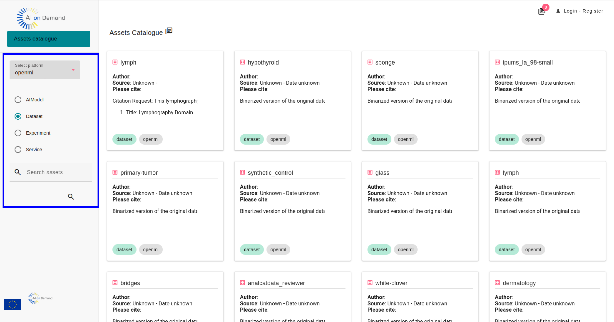
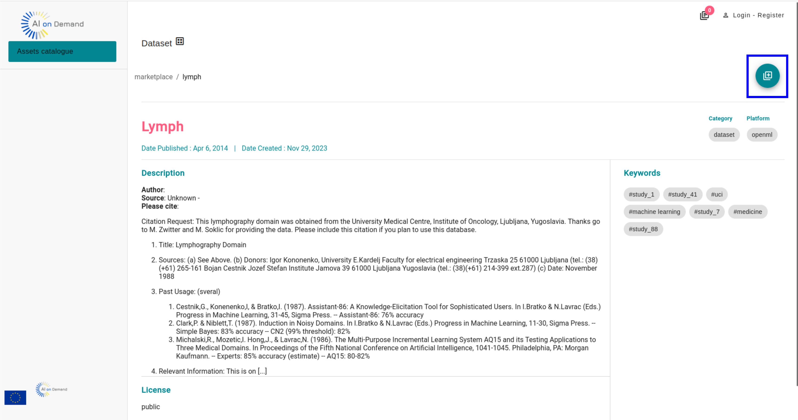
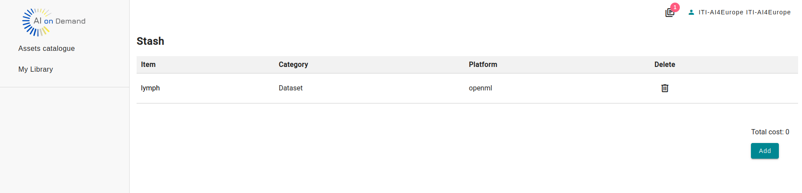

MyLibrary is a tool that allows AI researchers to explore some types of AI assets directly in AIoD . MyLibrary is developed within the AI4Europe project as one of the core services of the new release of the AI4Europe project AI on Demand platform.
More especifically, MyLibrary:
Important note: MyLibrary is currently in testing mode.
MyLibrary allows you to browse some types of assets of the AIoD platform, namely:
You can filter the assets by the platform or research project they belong to, or search them by keyword, for instance.
Click on any asset to learn more about it. If you like it, add it to the stash.
Once you have added an asset of your interest to the stash, add them to your personal library of AIoD AI assets. Your library will be shared with other AIoD services [available soon]
